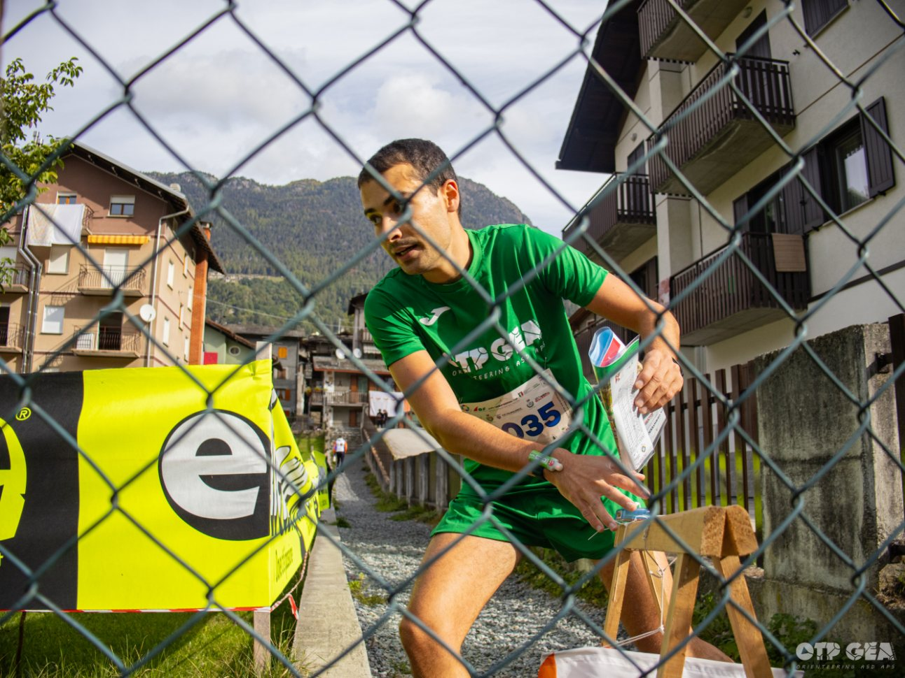
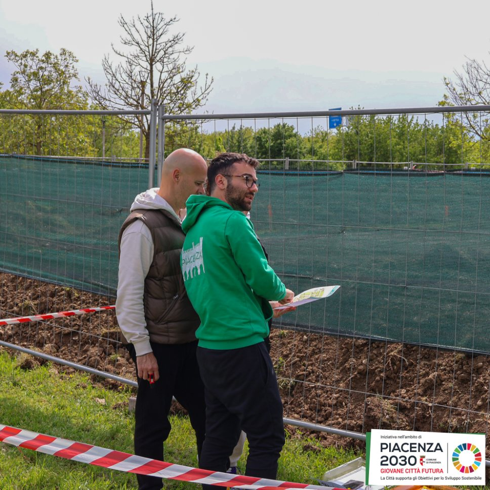
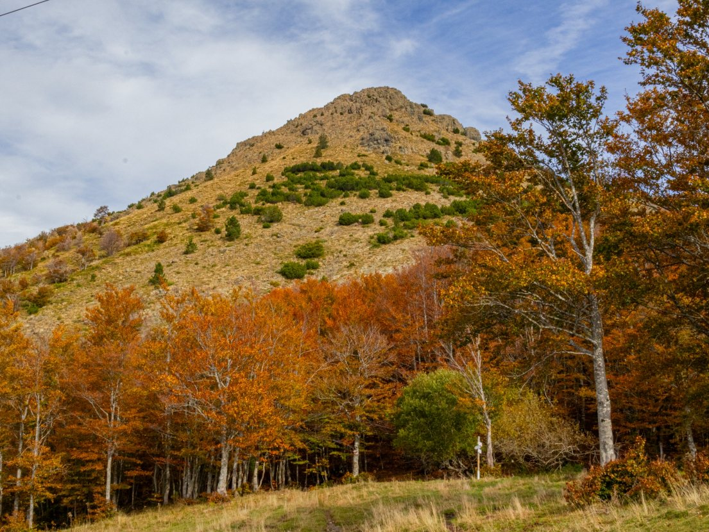
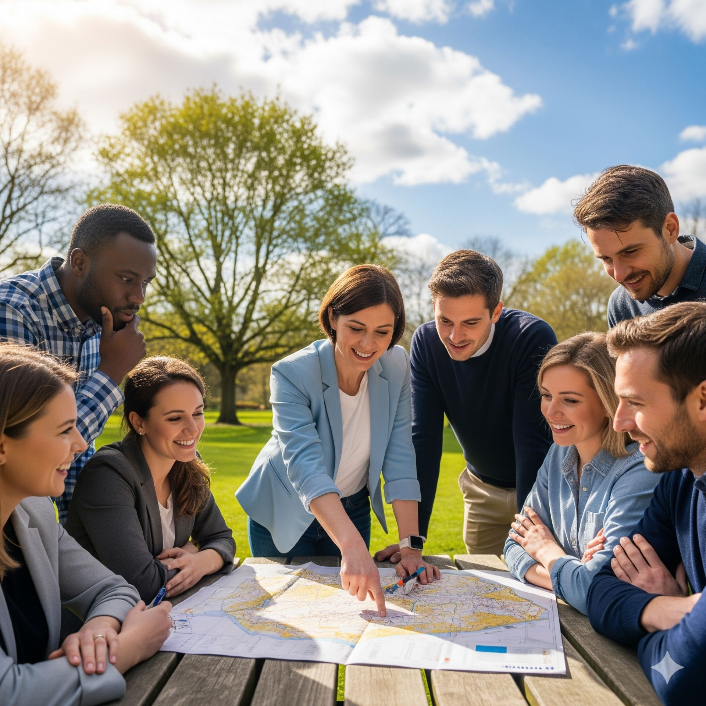
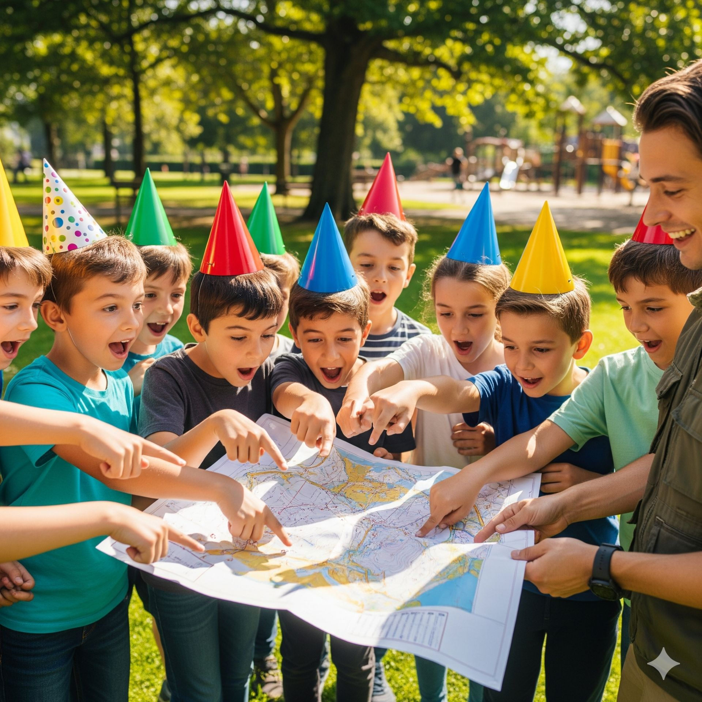
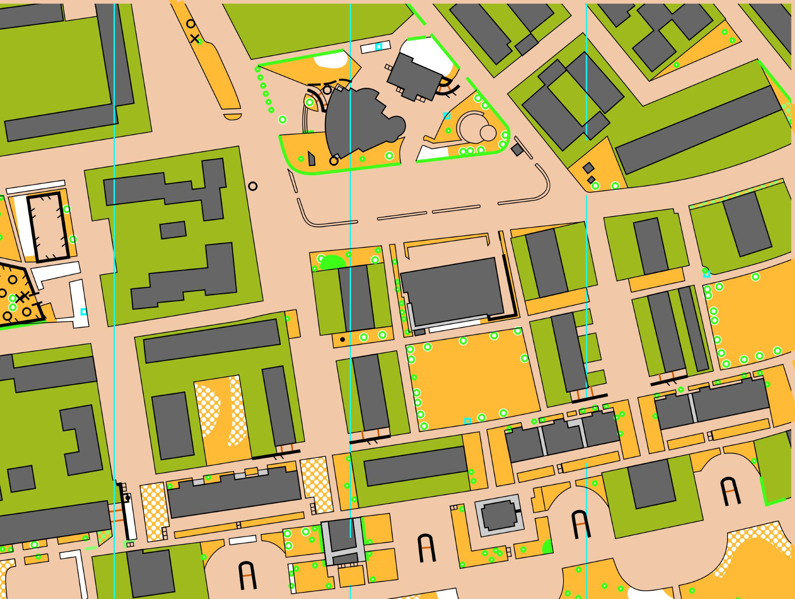

Corri, pensa, esplora.
Benvenuti nel sito di OTP-GEA Orienteering ASD APS. Uno sport affascinante che unisce abilità fisiche e mentali in un'esperienza unica.
Scopri le nostre attivitàEntra in Azione con Noi
Corso Base di Orienteering
Impara a dominare mappa e bussola e a esplorare la natura in totale sicurezza. Un percorso completo dalla teoria alla pratica nel bosco.
Quando: Da settembre 2025.
Scopri di Più e IscrivitiAllenamento Funzionale
Migliora la tua preparazione fisica con i nostri allenamenti specifici per la corsa e l'orienteering. Un'occasione per tenersi in forma e fare gruppo.
A chi si rivolge: Atleti e appassionati maggiorenni.
Chiedi InfoGare a Lugagnano e Castell'Arquato
Mettiti alla prova in una gara sprint aperta a tutti, dai neofiti agli agonisti più esperti, in due dei borghi più belli della Val d'Arda.
Quando: Sabato 28 Settembre.
Dettagli e IscrizioniCosa Facciamo

Gare ed Eventi
Organizziamo competizioni per tutti i livelli, dai campionati studenteschi agli eventi aperti ad atleti esperti e neofiti.
Scopri di più
Corsi e Allenamenti
I nostri corsi e allenamenti sono pensati per migliorare la tua tecnica, sia che tu sia un principiante o un atleta esperto.
Scopri di più
Promozione del Territorio
L'orienteering è il modo perfetto per scoprire le bellezze nascoste della provincia di Piacenza attraverso lo sport.
Scopri di più
Teambuilding
Sfide pensate per aziende e gruppi di lavoro. Un'attività formativa per migliorare collaborazione e problem solving.
Scopri di più
Feste di Compleanno
Organizza una festa originale e avventurosa! Una caccia al tesoro moderna con mappa e bussola per bambini e ragazzi.
Scopri di più
Le Nostre Mappe
Esplora l'archivio delle nostre mappe di gara, un patrimonio di percorsi e luoghi che abbiamo mappato nel piacentino.
Scopri di piùLa Nostra Storia
L'orienteering è uno sport che si svolge sia in città che in natura, e consiste nel completare un percorso nel minor tempo possibile. Dotato di mappa e bussola, l'atleta deve trovare dei punti di controllo, le "lanterne". Non c'è un tracciato prestabilito: l'abilità sta nel decidere la via migliore per raggiungere i punti in sequenza. È un'attività non solo fisica ma anche mentale, che premia chi riesce ad esplorare con sicurezza un territorio sconosciuto interpretando la mappa di gara.
La nostra associazione nasce il 23 maggio 2023, ma la nostra storia parte da lontano. Siamo nati da una "costola" di OTPGEA ONLUS, storica associazione di escursionismo piacentina. La svolta avvenne nel 2012, quando Corrado Arduini, Presidente FISO Emilia-Romagna, incontrò Dario Maramotti di OTPGEA ONLUS, dando il via a un'intensa attività legata alla Federazione. Da queste esperienze, in particolare dai Campionati Studenteschi, è nata la passione di un gruppo di amici, allora sedicenni, che oggi formano il cuore dell'associazione. Con il tempo, abbiamo deciso di fondare una nuova associazione dedicata unicamente all'orienteering, per concentrare al meglio le nostre energie.
Sostieni la Nostra Passione
La nostra associazione vive grazie all'impegno dei volontari e al supporto di chi crede nel nostro progetto. Un modo semplice per aiutarci è donare il tuo 5x1000.
Dona il tuo 5x1000
È un gesto semplice che a te non costa nulla, ma per noi fa una grande differenza. Inserisci il nostro codice fiscale nella tua dichiarazione dei redditi.